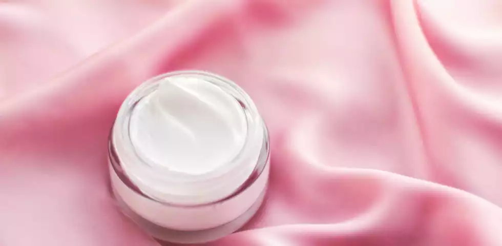

CREMA
L’idratazione è essenziale per il benessere e, di conseguenza, per mantenere il tono e l’aspetto liscio e morbido della pelle.
Grazie ad ingredienti specifici, come l’acido ialuronico, e altri attivi umettanti, la crema idratante è in grado di richiamare, catturare e trattenere le molecole d’acqua negli strati cutanei. Alcune formulazioni arricchite con ceramidi sono addirittura in grado di imitare i naturali meccanismi di idratazione della pelle, aumentando significativamente i livelli di idratazione cutanea e riducendo la perdita di acqua transepidermica.
Le molecole d’acqua presenti negli strati della pelle, grazie all’azione della crema idratante, la rendono piena e tonica, contrastando la formazione di pieghe sottili e rughe, rinforzano la barriera cutanea, proteggendola dell’aggressione di agenti esterni, e ne stimolano l’equilibrio e il benessere, riducendo la comparsa di imperfezioni.
Alcuni studi hanno inoltre evidenziato che l’utilizzo quotidiano di una crema idratante permette alla pelle di assorbire in modo ottimale gli ingredienti attivi di trattamenti skincare, aumentandone l’efficacia. Fondamentale è sapere come scegliere l’idratante più adatto al proprio tipo di pelle.
